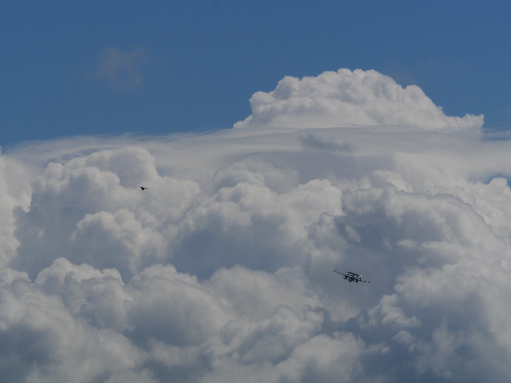
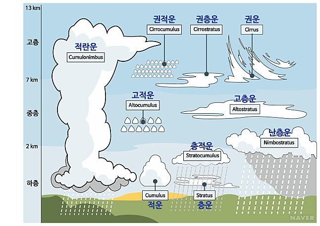

- 적란운
- 권운
- 고적운
구름

구름은 작은 물방울이나 얼음 알갱이가 많이 몰려서 대기 중에 떠 있는 것을 말해요.
수증기를 포함한 공기가 높이 올라가면 주위의 기압이 낮아져 부피가 커지는데,
부피가 커지면 공기 온도는 낮아지고, 기온이 이슬점 아래로 내려가면 수증기는 응결됩니다.
응결된 수증기는 작은 물방울이나 얼음 알갱이가 되어 일정한 곳에 몰려서 구름이 만들어집니다.
또한 구름은 습기를 가진 공기 덩어리가 높이 올라갔을 때도 생겨요.

사진 출처: 한국기상학회
구름은 생긴 모양에 따라 권운(털구름), 권적운(털쌘구름), 권층운(털층구름), 고적운(높쌘구름), 고층운(높층구름), 난층운(비층구름), 층적운(층쌘구름), 층운(층구름), 적운(쌘구름), 적란운(쌘비구름) 등의 종류가 있어요.
여름철에는 대기 중에 적란운과 적운이 많이 떠 있어요. 가을철에는 권운과 권적운이 많이 나타나지만, 비가 내리기 전에는 고층운과 적란운이 주로 나타납니다.
작은 물방울이 구름처럼 높은 곳에 떠 있지 않고 땅에서 가까운 공기 중에 떠 있는 것은 안개라고해요.
[네이버 지식백과] 구름 [cloud] (천재학습백과 초등 과학 용어사전)